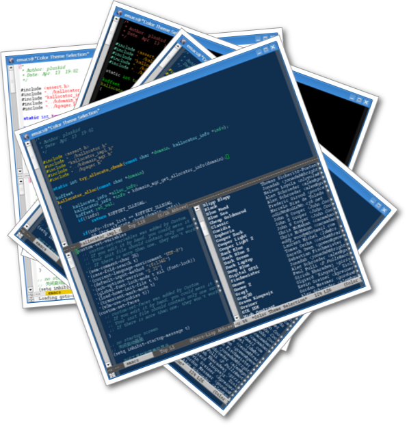

这就是 color-theme.el 带给 Emacs 的效果，很漂亮吧！Emacs 本身就具有极高 的可定制性，但是自己定义颜色的工作却有点过于繁琐我无聊，为此，已经有 hacker 为我们提供了一个现成的 color-theme 扩展包，里面有很多漂亮的颜色 主题，上面的图片中显示的就是其中的几个。下面我们开始安装 color-theme 包 吧！
首先下载 color-theme.el 1，然后把它放在你的加载路径里面，最后在你的
~/.emacs 里面加上 (require 'color-theme) 就可以使用了。现在重新启动一
下 Emacs ，然后就可以用 M-x color-theme-select 来选择你喜欢的颜色主题
了，它会打开一个列表，在每个列表项目上回车会应用那个颜色主题，如果选上
了某个主题，按一下 d ，会出现类似：
color-theme-sitaramv-nt is an interactive compiled Lisp function in `color-theme.el'. (color-theme-sitaramv-nt) Black foreground on white background. Includes faces for font-lock, widget, custom, speedbar. [back]
的东西，其中那句 (color-theme-sitaramv-nt) 加入到你的 ~/.emacs 里面去，
就可以永久应用这个颜色主题了。
Footnote
1. 你可以在这里得到 color-theme 6.5.5 ，也可以到 EmacsWiki 上去找最新 版的 color-theme.el 。